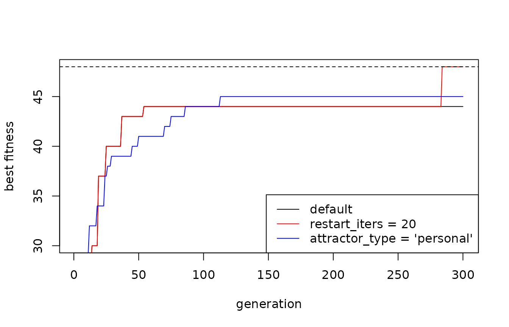

vignettes/local_optima.Rmd
local_optima.RmdLike most evolutionary algorithms, the QGA can converge prematurely to a local optimum. In the QGA this happens for three reasons:
All individuals follow the same attractor. At each generation the rotation gate moves the qubits of every individual towards the best individual of the generation. After a few generations the population becomes homogeneous, and the search continues only around that solution.
Qubits saturate. When the probability of a bit value approaches 0 or 1, the measurement becomes deterministic. Near these extremes the rotation changes the probability very little, so the bit is practically frozen.
A large rotation angle accelerates convergence.
theta is the step by which every qubit is rotated
towards the best solution: a large theta does not
mean more exploration, but faster collapse on the first good solution
found. Exploration comes from keeping the qubits in
superposition.
Mutation and interference do not solve the problem: mutation acts on very few qubits, and interference only redistributes the diversity that is already in the population, without creating new diversity.
The QGA function offers some parameters to counteract
premature convergence. They are all switched off by default, so that the
standard behaviour is unchanged.
To show their effect we use a deceptive trap function: the solution is made of 12 blocks of 4 bits; the value of each block is 4 if all its bits are 1, otherwise 3 minus the number of ones. The global optimum (all ones) is 48, but each block “pushes” towards all zeros, a local optimum worth 36.
trap4 <- function(solution, eval_func_inputs) {
bits <- solution - 1 # QGA values are 1..nvalues_sol
u <- colSums(matrix(bits, nrow = 4)) # number of ones in each block
sum(ifelse(u == 4, 4, 3 - u))
}We run the QGA with the default parameters:
set.seed(1)
base <- QGA(popsize = 20,
generation_max = 300,
nvalues_sol = 2,
Genome = 48,
eval_fitness = trap4,
eval_func_inputs = NULL,
plotting = FALSE,
verbose = FALSE,
progress = FALSE)
max(base[[2]]$fitness_best)
#> [1] 44thetainit and
thetaend
The rotation angle decreases linearly from thetainit to
thetaend. A qubit starts around pi/4 (equal probabilities)
and becomes deterministic at 0 or pi/2: if it is always pushed in the
same direction, it saturates after about (pi/4)/theta generations.
| theta | generations_to_saturate |
|---|---|
| 0.05*pi | 5 |
| 0.025*pi | 10 |
| 0.01*pi | 25 |
| 0.005*pi | 50 |
| 0.001*pi | 250 |
With the default values (thetainit = 0.05*pi,
thetaend = 0.025*pi) a bit can be decided in 5 to 10
generations. As a rule of thumb, choose theta so that
saturation requires at least 10-20% of generation_max, for
instance thetainit = 0.01*pi and
thetaend = 0.005*pi with 200-300 generations. Smaller
values slow down convergence, so more generations may be needed.
epsilon
The H-epsilon gate (Han and Kim, 2004) keeps the probability of each
bit value in [epsilon, 1 - epsilon], so that
qubits never collapse completely and every bit always keeps a small
probability of changing. Typical values are 0.01-0.05.
QGA(..., epsilon = 0.02)In our experiments the gate alone did not improve the results: with small values it acts like a light mutation. It can be useful in combination with the other options.
restart_iters and
restart_strength
When the best fitness does not improve for restart_iters
generations, the population is partially brought back towards equal
probabilities: the angle of each qubit is moved towards pi/4 by the
fraction restart_strength (0 = no change, 1 = complete
reset). The individual equal to the best solution is preserved, so
nothing already found is lost. After a restart the counter starts
again.
set.seed(1)
restart <- QGA(popsize = 20,
generation_max = 300,
nvalues_sol = 2,
Genome = 48,
eval_fitness = trap4,
eval_func_inputs = NULL,
plotting = FALSE,
verbose = FALSE,
progress = FALSE,
restart_iters = 20,
restart_strength = 0.5)
max(restart[[2]]$fitness_best)
#> [1] 48If stop_iters is used, restart_iters must
be smaller than stop_iters, otherwise the algorithm stops
before any restart.
restart_iters and
restart_strength
The benchmark below (20 seeds for each configuration,
popsize = 20, default theta; see the last
section for the two problems) shows that the good values of
restart_iters do not scale with
generation_max: they depend on the time a qubit needs to
saturate, about (pi/4)/theta generations (see the table on
theta above). With the default angles this time is 5-10
generations, and on trap-4 restart_iters = 20 finds the
optimum in 20 runs out of 20 with 600 generations, while
restart_iters = 40 never does, with 300 or 600 generations.
Frequent restarts work because the population never collapses
completely: every restart pushes it back in superposition before the
qubits freeze.
| generation_max | restart_iters | restart_strength | trap4_mean | trap4_optimum_found | rastrigin_mean |
|---|---|---|---|---|---|
| 300 | none | 42.25 | 0/20 | -11.31 | |
| 300 | 10 | 0.25 | 46.50 | 14/20 | -11.72 |
| 300 | 10 | 0.5 | 48.00 | 20/20 | -15.58 |
| 300 | 10 | 1 | 40.90 | 1/20 | -19.99 |
| 300 | 20 | 0.25 | 42.30 | 0/20 | -11.00 |
| 300 | 20 | 0.5 | 46.20 | 12/20 | -10.69 |
| 300 | 20 | 1 | 43.20 | 3/20 | -14.07 |
| 300 | 40 | 0.25 | 42.25 | 0/20 | -11.27 |
| 300 | 40 | 0.5 | 42.20 | 0/20 | -10.21 |
| 300 | 40 | 1 | 42.80 | 1/20 | -11.36 |
| 300 | 80 | 0.25 | 42.25 | 0/20 | -11.16 |
| 300 | 80 | 0.5 | 42.25 | 0/20 | -11.24 |
| 300 | 80 | 1 | 42.25 | 0/20 | -10.08 |
| 150 | none | 42.20 | 0/20 | -12.39 | |
| 150 | 5 | 0.5 | 37.10 | 5/20 | -27.75 |
| 150 | 10 | 0.5 | 45.40 | 14/20 | -19.75 |
| 150 | 20 | 0.5 | 42.10 | 0/20 | -13.09 |
| 150 | 40 | 0.5 | 42.20 | 0/20 | -12.77 |
| 600 | none | 42.25 | 0/20 | -9.16 | |
| 600 | 20 | 0.5 | 48.00 | 20/20 | -9.98 |
| 600 | 40 | 0.5 | 42.30 | 0/20 | -8.45 |
| 600 | 80 | 0.5 | 42.25 | 0/20 | -9.17 |
| 600 | 160 | 0.5 | 42.25 | 0/20 | -9.33 |
From these results:
restart_strength: 0.5 is the best
compromise. A complete reset (1) throws away what the population has
learned and is equivalent to a random restart; a weak restart (0.25)
helps only if it is very frequent.restart_iters: on a deceptive problem,
take 1.5-3 times the saturation time, i.e. 10-20 with the
default angles, and proportionally more with smaller angles
(for instance 40-80 with thetainit = 0.01*pi). On a problem
with many local optima, like Rastrigin, frequent restarts are harmful
(they interrupt the local search), and less frequent restarts (40-80)
give at most a small improvement.generation_max: it does not determine
restart_iters, but it must leave room for several restarts
after the population has converged: with 150 generations even
restart_iters = 10 is less effective than with 300. As a
rough rule, generation_max should be at least 10-15 times
restart_iters.restart_theta
Since theta decays during the run, a late restart works
with a small angle. With restart_theta = TRUE, at each
restart theta is brought back to thetainit and
decays again to thetaend over the remaining
generations.
| generation_max | restart_iters | restart_strength | trap4_found_FALSE | trap4_found_TRUE | rastrigin_FALSE | rastrigin_TRUE |
|---|---|---|---|---|---|---|
| 300 | 20 | 0.5 | 12/20 | 1/20 | -10.69 | -10.39 |
| 300 | 20 | 1.0 | 3/20 | 10/20 | -14.07 | -13.16 |
| 300 | 40 | 0.5 | 0/20 | 0/20 | -10.21 | -9.57 |
| 300 | 40 | 1.0 | 1/20 | 2/20 | -11.36 | -10.10 |
| 150 | 10 | 0.5 | 14/20 | 18/20 | -19.75 | -16.88 |
| 150 | 20 | 0.5 | 0/20 | 0/20 | -13.09 | -12.90 |
| 600 | 40 | 0.5 | 0/20 | 0/20 | -8.45 | -7.99 |
| 600 | 80 | 0.5 | 0/20 | 0/20 | -9.17 | -8.84 |
The effect is mixed. On Rastrigin restoring the angle always gives a
slightly better mean, but the differences are small compared with the
variability among seeds. On trap-4 it helps after a complete reset
(restart_strength = 1) and with few generations, but it
spoils the best configuration (restart_iters = 20,
restart_strength = 0.5: from 12/20 to 1/20). The reason is
that theta is the step towards the attractor: right after a
partial restart the attractor is still the best solution, and a larger
angle brings the population back to it more quickly. For this reason
restart_theta is off by default; it can be tried together
with stronger restarts.
attractor_type = "personal"
With attractor_type = "personal" (Han and Kim, 2002)
every individual is rotated towards its own attractor, i.e. the best
solution it has found so far, instead of the best individual of the
generation. In this way the population keeps several “niches” of search.
The attractors are shared through migration:
migration_group_size (default 2): the population is
divided into groups of consecutive individuals;migration_local_period (default 1): every this many
generations, the best attractor of each group is copied to the other
members of the group (local migration);migration_global_period (default 50): every this many
generations, the best attractor is copied to all individuals (global
migration).Larger groups and more frequent global migration make the search more similar to the standard one; smaller groups and rarer global migration preserve more diversity, but slow down convergence.
set.seed(1)
personal <- QGA(popsize = 20,
generation_max = 300,
nvalues_sol = 2,
Genome = 48,
eval_fitness = trap4,
eval_func_inputs = NULL,
plotting = FALSE,
verbose = FALSE,
progress = FALSE,
attractor_type = "personal")
max(personal[[2]]$fitness_best)
#> [1] 45interference_flag,
interference_type, interference_rate,
interference_lambda
The interference operator recombines information among individuals,
with probability interference_rate at each generation:
interference_type = "diagonal": the amplitudes of the
j-th qubit of each individual are copied from another individual
following a diagonal scheme (Narayanan and Moore, 1996);interference_type = "amplitude": each qubit receives
the sum of the amplitudes of the whole population, weighted by fitness,
so that individuals above the average fitness interfere constructively
and those below destructively; interference_lambda sets the
strength.Being a recombination operator, interference does not create new diversity, and in our experiments it did not help to escape local optima.
plot(base[[2]]$fitness_best, type = "l", ylim = c(30, 48),
xlab = "generation", ylab = "best fitness")
lines(restart[[2]]$fitness_best, col = "red")
lines(personal[[2]]$fitness_best, col = "blue")
abline(h = 48, lty = 2)
legend("bottomright", lty = 1, col = c("black", "red", "blue"),
legend = c("default", "restart_iters = 20", "attractor_type = 'personal'"))
A single run is not enough to compare the options, because the QGA is stochastic. The following section reports the results obtained on 20 runs for each configuration.
Two problems with known optimum were used, with
popsize = 20, generation_max = 300, 20 seeds
for each configuration, default theta:
The column last_improvement is the average generation of
the last improvement of the best fitness: low values mean that the
search stopped early.
| configuration | trap4_mean | trap4_optimum_found | trap4_last_improvement | rastrigin_mean | rastrigin_last_improvement |
|---|---|---|---|---|---|
| default | 42.25 | 0/20 | 64 | -11.31 | 124 |
| epsilon = 0.02 | 41.65 | 0/20 | 49 | -10.76 | 177 |
| restart_iters = 20 | 46.20 | 12/20 | 214 | -10.69 | 96 |
| attractor_type = ‘personal’ | 44.80 | 0/20 | 111 | -7.96 | 221 |
| all three | 43.70 | 0/20 | 130 | -7.25 | 217 |
| personal + restart_iters = 10 | 42.30 | 0/20 | 126 | -11.88 | 192 |
| personal + restart_iters = 20 | 44.50 | 0/20 | 131 | -8.34 | 232 |
| personal + restart_iters = 40 | 44.75 | 0/20 | 116 | -7.67 | 220 |
The main findings are:
restart_strength = 0.5 and restart_iters equal
to 1.5-3 times the saturation time (pi/4)/theta, i.e. 10-20 with the
default angles, independently of generation_max.parameters_hint() to get a first set of values from
generation_max, the genome and the kind of problem (see
below).attractor_type = "personal", possibly with more
generations.parallel = TRUE.parameters_hint()
The function parameters_hint() turns the guidelines
above into a first set of values, given generation_max, the
genome (Genome, nvalues_sol) and the kind of
problem ("deceptive", "multimodal",
"unimodal" or "unknown"):
generation_max / 40 when restarts are used, and
generation_max / 10 otherwise, never faster than the
default angles;restart_iters is 1.5 times the saturation time for
deceptive problems, 3 times when the problem is unknown, 6 times for
problems with many local optima; no restart for unimodal problems;restart_strength = 0.5; personal attractors for unknown
and multimodal problems.
hint <- parameters_hint(generation_max = 300, Genome = 48, nvalues_sol = 2,
problem_type = "deceptive")
#>
#> QGA parameters hint
#> -------------------
#> problem_type: deceptive; genome of 48 genes x 1 bits = 48 qubits; 300 generations
#> saturation time (pi/4)/theta: about 7.5 generations
#>
#> thetainit = 0.1396 (= 0.0444 * pi)
#> thetaend = 0.0698 (= 0.0222 * pi)
#> restart_iters = 11 (1.5 x saturation time)
#> restart_strength = 0.5
#> restart_theta = FALSE (experimental)
#> epsilon = 0
#> attractor_type = "generation"
#>
#> fitness evaluations: up to 6020
#> These are starting points: compare a few configurations on several seeds.The returned list can be passed directly to QGA():
out <- do.call(QGA, c(list(popsize = 20, generation_max = 300,
nvalues_sol = 2, Genome = 48,
eval_fitness = trap4, eval_func_inputs = NULL),
hint))On the two test problems (20 seeds, popsize = 20) the
suggested values improve on the defaults for every number of
generations, both when the kind of problem is given and when it is
declared unknown:
| generation_max | configuration | trap4_mean | trap4_optimum_found | rastrigin_mean |
|---|---|---|---|---|
| 150 | default | 42.20 | 0/20 | -12.39 |
| 150 | hint (problem type given) | 45.40 | 14/20 | -10.35 |
| 150 | hint (unknown) | 43.95 | 1/20 | -11.21 |
| 300 | default | 42.25 | 0/20 | -11.31 |
| 300 | hint (problem type given) | 48.00 | 20/20 | -9.00 |
| 300 | hint (unknown) | 44.00 | 1/20 | -9.56 |
| 600 | default | 42.25 | 0/20 | -9.16 |
| 600 | hint (problem type given) | 47.60 | 19/20 | -6.02 |
| 600 | hint (unknown) | 43.50 | 0/20 | -6.81 |
Knowing the kind of problem helps, especially on the deceptive one:
with "unknown" the function chooses personal attractors,
which are a good compromise on both problems but are less effective than
restarts alone on trap-4. The suggestions are starting points: compare a
few configurations on several seeds.
The structure of the fitness function gives the first indications. Independent contributions of the genes suggest a unimodal problem; interactions or penalties a multimodal one. “All or nothing” rewards (a bonus only when a whole group of genes is complete, while intermediate configurations are worth less than the starting one), thresholds and penalties for intermediate states, or an optimum lying on a narrow boundary between constraints, reachable only through infeasible or penalised solutions, are typical signs of deception.
The kind of problem can also be explored empirically:
problem_type = "deceptive") give
a clear jump, as on trap-4 from 42 to 48, the problem is deceptive;"unimodal" removes the restarts and slows down the
rotation, so it should be used only when one is sure: if the problem has
traps, the risk of premature convergence increases. When in doubt, use
"unknown" and switch to "deceptive" or
"multimodal" if the comparison on several seeds suggests
it.